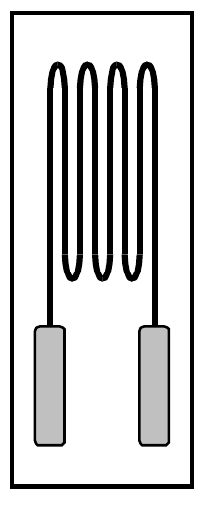
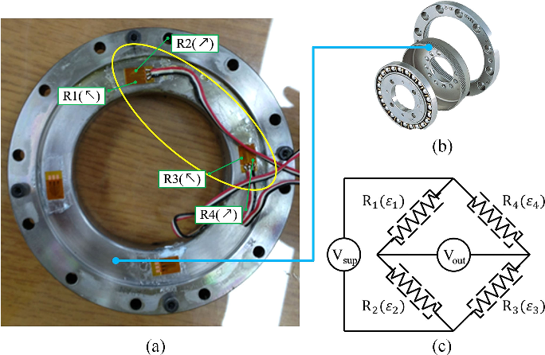
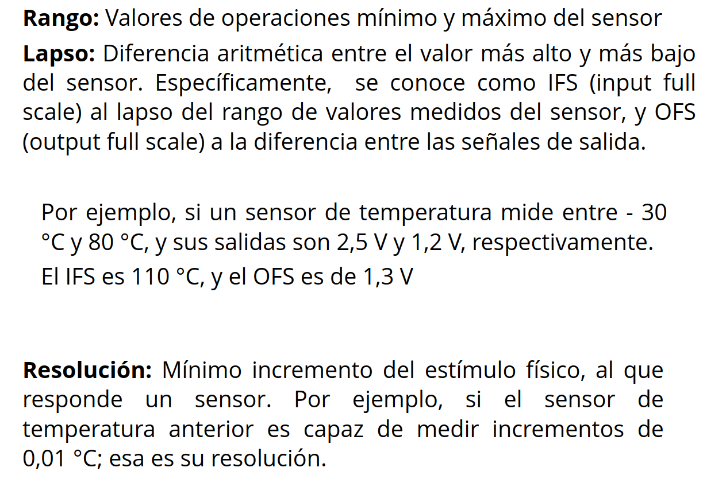
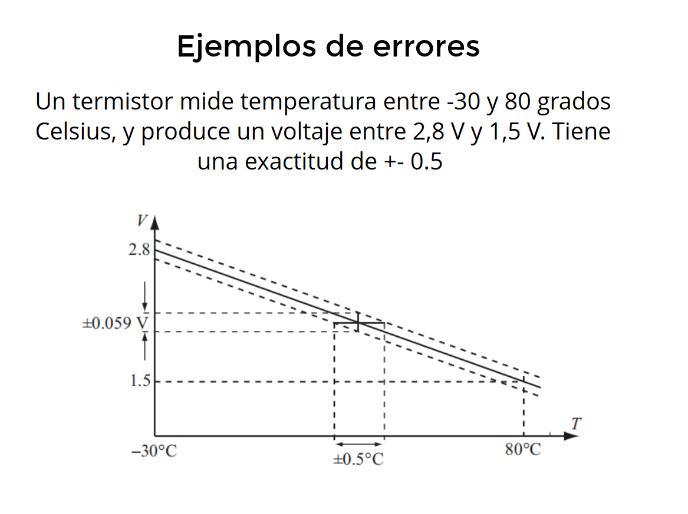
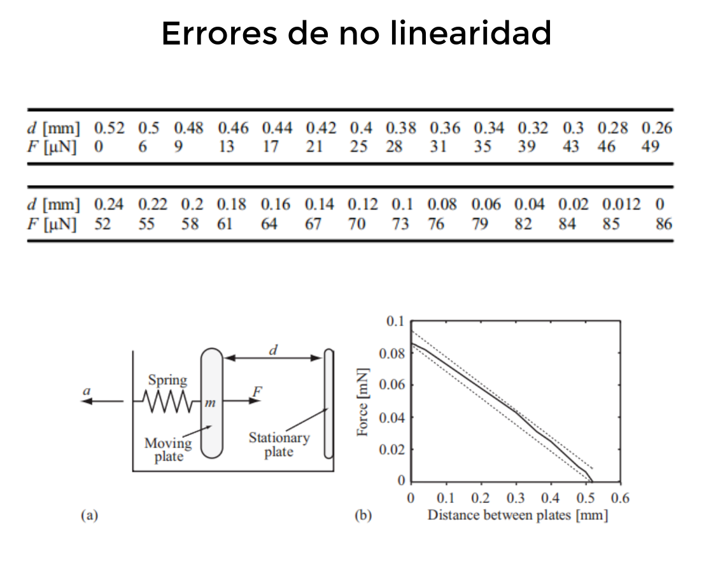
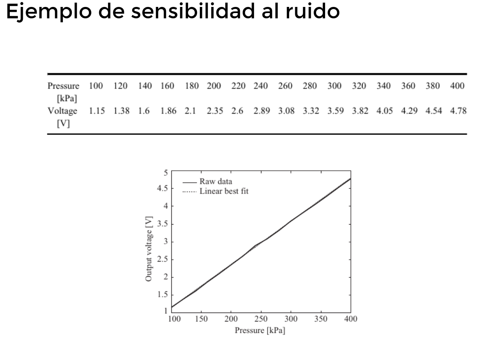

<style> .reveal section img { background:none; border:none; box-shadow:none; } #left { margin: 10px 0 15px 20px; text-align: center; float: left; z-index:-10; width:48%; font-size: 0.85em; line-height: 1.5; } #right { margin: 10px 0 15px 0; float: right; text-align: center; z-index:-10; width:48%; font-size: 0.85em; line-height: 1.5; } </style> # Unidad 2: Sensores y Actuadores <span style="font-size: 20.0pt; "> **Profesor:** Ing. Israel Chaves Arbaiza </span> <span style="font-size: 20.0pt;"> **Curso**: Mecatrónica </span> <img align="left" width="300" height="300" src="media/logo-ucr.png"> <img align="right" width="300" height="180" src="media/logoEIM.png"> --- ## Agenda <span style="font-size: 22.0pt; "> * Tipos * Características importantes </span> --- ## Sensores en un sistema --- ## Tipos <span style="font-size: 20.0pt; "> Actualmente, existen sensores para medir casi cualquier cosa, y se diseñan más cada día. Para clasificarlos, se dividen en **dominios**, según la variable física que miden, como por ejemplo: * **Químicos:** Miden concentración química, composición, y velocidad de reacción. * **Eléctricos:** Para detectar corriente, voltaje, resistencia, capacitancia, inductancia, y carga. * **Magnéticos:** Intensidad de campo magnético, densidad de flujo, y magnetización. </span> ---- ## Tipos <span style="font-size: 20.0pt; "> * **Mecánicos:** Detectan desplazamiento, tensión, nivel, posición, velocidad, aceleración, fuerza, torque, presión, ó flujo. * **Radiantes:** Miden la intensidad de onda electromagnética, la longitud de onda, polarización y fase, entre otros. * **Térmicos:** temperatura, calor y flujo de calor. </span> ---- ## Tipos  --- ## Lineales y rotacionales <span style="font-size: 20.0pt; "> * Son de los sensores más comunes y ampliamente utilizados * Típicamente, producen una salida eléctrica proporcional al desplazamiento * Existen de **contacto**, como las galgas extensiométricas, tacómetros, y otros. * Ó los encoders, de efecto Hall, capacitivos, inductivos, que son de **no contacto** * Los sensores de alta resolución, como galgas, efecto Hall, inductivos y capacitivos, trabajan en rangos pequeños (de 0,1 mm hasta los 5 mm) </span> ---- ## Lineales y rotacionales ### Galgas extensiométricas <span style="font-size: 20.0pt; "> $$ \frac{\Delta v_0}{v_i} = \frac{\Delta R_{1}/R}{4+2(\Delta R_{1}/R)} $$ </span>  ---- ## Lineales y rotacionales ### Galgas extensiométricas <iframe width="800" height="500" src="https://www.youtube.com/embed/Mts5Cr_BNCg" title="YouTube video player" frameborder="0" allow="accelerometer; autoplay; clipboard-write; encrypted-media; gyroscope; picture-in-picture" allowfullscreen></iframe> ---- ## Sensores de aceleración <span style="font-size: 20.0pt; "> * Medir la aceleración suele ser importante para sistemas sujetos a impactos ó vibración. * A pesar de que se puede obtener a partir de sensores lineales ó rotacionales; se prefieren los acelerómetros * Existen 2 tipos de acelerómetros, los de **masa sísmica**, y los de **piezoeléctrico** * Los primeros son ideales para bajas frecuencias (menos de 1kHz) y los piezoeléctricos, para altas frecuencias (más de 1kHz) </span> <img align="left" width="500" height="350" src="media/accelerometer.jpg"> ---- ## Sensores de fuerza, torque y presión <span style="font-size: 20.0pt; "> * Para medir estas variables, los sensores más comunes son del tipo **piezoeléctrico**, ó los **dinamómetros de galgas extensiométricas** * Pueden identificar fuerzas o torques en uno ó varios ejes * Los que utilizan galgas están limitados por su frecuencia natural * Mientras que los de piezoeléctricos, trabajan en un amplio rango de frecuencias, tienen mayor resolución, son compactos, y poseen mayor rigídez </span> <img align="left" width="300" height="350" src="media/force_sensor01.png">  --- ## Sensores de flujo <span style="font-size: 20.0pt; "> * Medir flujo es una tarea compleja, ya que el medio puede variar entre líquido y gas, ó ser una mezcla de ambos * Además, el fluido puede ser laminar ó turbulento, y puede cambiar con el tiempo * Es muy importante elegir el tipo de sensor según el tipo de fluido, por ejemplo, si el fluido es corrosivo, con partículas abrasivas, su nivel de pH; el ángulo de inclinación de la tubería, etc. </span> ---- ## Sensores de flujo <iframe width="800" height="500" src="https://www.youtube.com/embed/_pL7bGEF52s" title="YouTube video player" frameborder="0" allow="accelerometer; autoplay; clipboard-write; encrypted-media; gyroscope; picture-in-picture" allowfullscreen></iframe> ---- ## Sensores de temperatura <span style="font-size: 20.0pt; "> * Los más comunes son las termocuplas, los termistores, *RTD* (resistencias detectoras de temperatura), y los infrarrojos. * Las **termocuplas** son las más versátiles, económicas, y de amplio rango (hasta $ 1200^{\circ}C $) * Los **termistores** son dispositivos semiconductores, cuya resistencia varía según el cambio de temperatura. Son muy sensibles en rangos hasta los $ 100^{\circ}C $ * **RTDs** son las más estables, y trabajan de forma lineal en un alto rango de trabajo. * Mientras que los infrarrojos trabajan como sensores de no contacto. Son altamente usados para generar un mapa térmico de una superficie. </span> <img width="400" height="250" src="media/RTD.jpg"> ---- ## Sensores de luz <span style="font-size: 20.0pt; "> * Detectar la intensidad de luz y un campo de visión amplio, son dos mediciones importantes utilizadas en aplicaciones de control * Los **fototransistores, fotodiodos, y fotoresistencias**, son de los más comunes, para detectar intensidad luminosa * En una subcategoría, se encuentran los sensores de color, y las cámaras industriales. * Al medir cualquier aspecto de la luz, para potenciar el funcionamiento del sensor, es ideal controlar, tanto como sea posible, las condiciones de luz en la medición. </span> <img align="right" width="500" height="350" src="media/industrial_camera.jpg"> ---- ## Sensores de materiales inteligentes <span style="font-size: 20.0pt; "> * Actualmente, hay muchos materiales nuevos, que se están aplicando para desarrollar nuevos sensores, especialmente en medición de situaciones distribuidas * Por ejemplo, **fibra óptica, piezoeléctricos, y materiales magnetostrictivos** </span> ---- ## Sensores de materiales inteligentes <iframe width="800" height="500" src="https://www.youtube.com/embed/ZKsInPJ7ilk" title="YouTube video player" frameborder="0" allow="accelerometer; autoplay; clipboard-write; encrypted-media; gyroscope; picture-in-picture" allowfullscreen></iframe> --- ## Características importantes <span style="font-size: 20.0pt; "> Al seleccionar un sensor, se deben considerar múltiples factores: * **Rango:** Es la diferencia entre el valor máximo y mínimo del parámetro a medir * **Resolución:** El cambio más pequeño que el sensor puede detectar * **Exactitud:** Diferencia entre el valor medido y el valor real * **Repetitibilidad:** Habilidad de reproducir un valor repetidamente, bajo condiciones idénticas * **Sensibilidad:** Nivel de cambio de la salida del sensor, respecto a un cambio en la entrada. * **Ajuste a cero:** Tener un valor diferente de cero, cuando no hay entrada. </span> ---- ## Características importantes <span style="font-size: 20.0pt; "> Otros factores, son: * **Tiempo de respuesta:** Tiempo entre la entrada y la salida correspondiente * **Temperatura de operación:** El rango de temperatura en que el sensor trabaja correctamente * **Función de transferencia:** Relación entre la salida y la entrada * **Impedancia y acople de impedancias:** Impedancia propia del sensor y su integración con la impedancia de los sistemas posteriores * **Histéresis:** Desviación del sensor, en cualquier punto. </span> --- ## Características importantes <img width="800" height="500" src="media/transfer.png"> ---- ## Características importantes ---- ## Características importantes <img width="800" height="500" src="media/ejemplo_impedancias.png"> ---- ## Características importantes  ---- ## Características importantes ### Ejemplo de resolución con un sensor de presión ---- ## Características importantes ---- ## Características importantes  ---- ## Características importantes  ---- ## Características importantes ---- ## Características importantes ---- ## Características importantes  ---- ## Características importantes ---- ## Características importantes